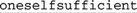

4.6. NFA, DFA, and POSIX4.6.1. "The Longest-Leftmost"Let me repeat what I've said before: when the transmission starts a DFA engine from some particular point in the string, and there exists a match or matches to be found at that position, the DFA finds the longest possible match, period. Since it's the longest from among all possible matches that start equally furthest to the left, it's the "longest-leftmost" match. 4.6.1.1. Really, the longestIssues of which match is longest aren't confined to alternation. Consider how an NFA matches the (horribly contrived) On the other hand, a DFA finds the longer . An NFA would also find that match if the initial I chose this silly example because it's easy to talk about, but I want you to realize that this issue is important in real life. For example, consider trying to match continuation lines. It's not uncommon for a data specification to allow one logical line to extend across multiple real lines if the real lines end with a backslash before the newline. As an example, consider the following:
SRC=array.c builtin.c eval.c field.c gawkmisc.c io.c main.c \
missing.c msg.c node.c re.c version.c
You might normally want to use If you have lazy quantifiers available, you might consider using them, such as with There are other approaches to solving this problem; we'll continue with this example in the next chapter (☞ 186). 4.6.2. POSIX and the Longest-Leftmost RuleThe POSIX standard requires that if you have multiple possible matches that start at the same position, the one matching the most text must be the one returned. The POSIX standard document uses the phrase "longest of the leftmost." It doesn't say you have to use a DFA, so if you want to use an NFA when creating a POSIX tool, what's a programmer to do? If you want to implement a POSIX NFA, you'd have to find the full and all the continuation lines, despite these results being "unnatural" to your NFA. A Traditional NFA engine stops with the first match it finds, but what if it were to continue to try options (states) that might remain? Each time it reached the end of the regex, it would have another plausible match. By the time all options are exhausted, it could simply report the longest of the plausible matches it had found. Thus, a POSIX NFA. An NFA applied to the first example would, in matching In Chapter 7, we'll see a method to trick Perl into mimicking POSIX semantics, having it report the longest match (☞ 335). 4.6.3. Speed and EfficiencyIf efficiency is an issue with a Traditional NFA (and with backtracking, believe me, it can be), it is doubly so with a POSIX NFA since there can be so much more backtracking. A POSIX NFA engine really does have to try every possible permutation of the regex, every time. Examples in Chapter 6 show that poorly written regexes can suffer extremely severe performance penalties. 4.6.3.1. DFA efficiencyThe text-directed DFA is a really fantastic way around all the inefficiency of backtracking. It gets its matching speed by keeping track of all possible ongoing matches at once. How does it achieve this magic? The DFA engine spends extra time and memory when it first sees the regular expression, before any match attempts are made, to analyze the regular expression more thoroughly (and in a different way) from an NFA. Once it starts actually attempting a match, it has an internal map describing "If I read such-and-such a character now, it will be part of this-and-that possible match." As each character of the string is checked, the engine simply follows the map. Building that map can sometimes take a fair amount of time and memory, but once it is done for any particular regular expression, the results can be applied to an unlimited amount of text. It's sort of like charging the batteries of your electric car. First, your car sits in the garage for a while, plugged into the wall, but when you actually use it, you get consistent, clean power.
The work done when a regex is first seen (the once-per-regex overhead) is called compiling the regex. The map-building is what a DFA does. An NFA also builds an internal representation of the regex, but an NFA's representation is like a mini program that the engine then executes. 4.6.4. Summary: NFA and DFA in ComparisonBoth DFA and NFA engines have their good and bad points. 4.6.4.1. DFA versus NFA: Differences in the pre-use compileBefore applying a regex to a search, both types of engines compile the regex to an internal form suited to their respective match algorithms. An NFA compile is generally faster, and requires less memory. There's no real difference between a Traditional and POSIX NFA compile. 4.6.4.2. DFA versus NFA: Differences in match speedFor simple literal-match tests in "normal" situations, both types match at about the same rate. A DFA's match speed is generally unrelated to the particular regex, but an NFA's is directly related. A Traditional NFA must try every possible permutation of the regex before it can conclude that there's no match. This is why I spend an entire chapter (Chapter 6) on techniques to write NFA expressions that match quickly. As we'll see, an NFA match can sometimes take forever. If it's a Traditional NFA, it can at least stop if and when it finds a match. A POSIX NFA, on the other hand, must always try every possible permutation of the regex to ensure that it has found the longest possible match, so it generally takes the same (possibly very long) amount of time to complete a successful match as it does to confirm a failure. Writing efficient expressions is doubly important for a POSIX NFA. In one sense, I speak a bit too strongly, since optimizations can often reduce the work needed to return an answer. We've already seen that an optimized engine doesn't try The need for optimizations is less pressing with a DFA since its matching is so fast to begin with, but for the most part, the extra work done during the DFA's pre-use compile affords better optimizations than most NFA engines take the trouble to do. Modern DFA engines often try to reduce the time and memory used during the compile by postponing some work until a match is attempted. Often, much of the compile-time work goes unused because of the nature of the text actually checked. A fair amount of time and memory can sometimes be saved by postponing the work until it's actually needed during the match. (The technobabble term for this is lazy evaluation.) It does, however, create cases where there can be a relationship among the regex, the text being checked, and the match speed. 4.6.4.3. DFA versus NFA: Differences in what is matchedA DFA (or anything POSIX) finds the longest leftmost match. A Traditional NFA might also, or it might find something else. Any individual engine always treats the same regex/text combination in the same way, so in that sense, it's not "random," but other NFA engines may decide to do slightly different things. Virtually all Traditional NFA engines I've seen work exactly the way I've described here, but it's not something absolutely guaranteed by any standard. 4.6.4.4. DFA versus NFA: Differences in capabilitiesAn NFA engine can support many things that a DFA cannot. Among them are:
4.6.4.5. DFA versus NFA: Differences in ease of implementationAlthough they have limitations, simple versions of DFA and NFA engines are easy enough to understand and to implement. The desire for efficiency (both in time and memory) and enhanced features drives the implementation to greater and greater complexity. With code length as a metric, consider that the NFA regex support in the Version 7 (January 1979) edition of ed was less than 350 lines of C code. (For that matter, the entire source for grep was a scant 478 lines.) Henry Spencer's 1986 freely available implementation of the Version 8 regex routines was almost 1,900 lines of C, and Tom Lord's 1992 POSIX NFA package rx (used in GNU sed, among other tools) is a stunning 9,700 lines. For DFA implementations, the Version 7 egrep regex engine was a bit over 400 lines long, while Henry Spencer's 1992 full-featured POSIX DFA package is over 4,500 lines long. To provide the best of both worlds, GNU egrep Version 2.4.2 utilizes two fully functional engines (about 8,900 lines of code), and Tcl's hybrid DFA/NFA engine (see the sidebar on the facing page) is about 9,500 lines of code. Some implementations are simple, but that doesn't necessarily mean they are short on features. I once wanted to use regular expressions for some text processing in Pascal. I hadn't used Pascal since college, but it still didn't take long to write a simple NFA regex engine. It didn't have a lot of bells and whistles, and wasn't built for maximum speed, but the flavor was relatively full-featured and was quite useful. |
 one(self)?(selfsufficient)?
one(self)?(selfsufficient)? against the string oneselfsufficient. An NFA first matches
against the string oneselfsufficient. An NFA first matches  (selfsufficient)?
(selfsufficient)? ]
]